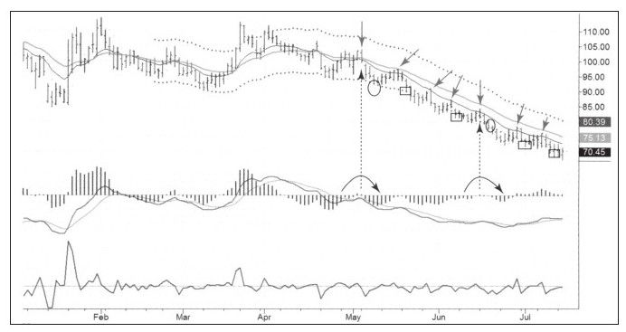

有时你可能会抓住一只股票的主要上涨或下跌趋势，之后不久它就进入自己的运行轨道。这种事不会发生在所有股票上，但只要你发现有股票走出这种模式，市场就变成了“提款机”。我不太情愿用“提款机”这个词，因为我不希望带给别人交易很容易的错觉。要知道股票迟早会跳出它的运行轨迹，这种模式也将失效，你的最后一次交易将是亏损的。所以，在这种模式下交易要保持固定的交易头寸，另外也不能在交易中加仓，如果不断加注，趋势完结时不可避免的损失会重创你的交易账户。如果完美是优秀的敌人，那么贪婪就是成功的敌人。
有一个必须谨记在心的要点是，所有这些日线图——当前这个、前一个以及下一个都必须与周线图主要趋势相背离。我在做出战略决策之前基本不看日线图[1]。每个交易者都需要一种优势，我的优势的重要部分是使用立体视角在至少两个时间框架上分析股票，而世界上多数人分析市场只用一个时间框架看市场。
两个短期交易系统适用于图9-10这种图表模式。一个是先前描述过的MACD反转系统，买入信号由上图中的垂直箭头标示，平仓信号由通道下轨线附近的圆圈标注；另一个系统——通道内做空，要求更好的时机及更多对价格的关注。

日线下跌趋势相对确定时，股价开始在通道内运行。这种模式下，价格回拉到两条EMA之间的价值区后，继续下跌并到达下轨附近的超卖区，如此往复。这种模式的做空入场机会由图中的斜箭头标注，出场机会由图中方框标注。即便有经验的交易者错过了前一两个这样的信号也没关系，因为之后的价格运动模式会非常清晰：在价值区做空，把止损设在刚出现的高点之上，在通道下轨附近获利了结。
行情发生变化的时候股价会止跌回升并强烈上涨，你设置的止损也被打破了，此时股票跳出了它的运行轨迹，你也该寻找其他机会了。没有哪个系统会年年获利，但当价格在通道中运行时，这类系统就派上用场了。不要丢弃已经停止工作的系统，先把它们放起来等待市场环境改变，未来你可能会用这个系统赚很多钱。
注意SHLD的日线通道随着时间的推移是如何变窄的，其高度由2007年超过20美元变为2008年中期的10美元以内，这是由于股价不断下跌造成的。
通道，也叫包络线，是设定盈利目标的有用工具。通道的高度反映了乐观和悲观、狂躁和低潮之间的差距。我认为只要抓住了通道宽度的30%，交易就可以评为A级。当然，试图成为明星的学员偶尔以A++为交易目标也无可非议，但是要记得更高的评分需要更长时间，而持仓时间却恰恰是风险的来源。
把自己作为商人，把交易头寸作为商品，大多数零售商会告诉你快速流转是商业正常运行的标志，不断流转你的商品，买低卖高或高位做空、低位买平。取得A评级会比试图长期持有但面临更大风险以获得A++评级更能教给你什么是成功的交易。
[1]客户有时候会发送只附有个股日线图的电子邮件，向我询问该股的操作建议，而我回复他们的是标准答复：在分析周线图之前我拒绝分析日线图。